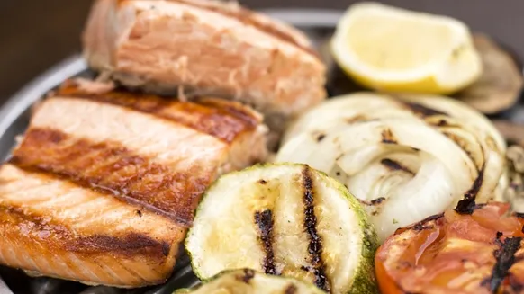
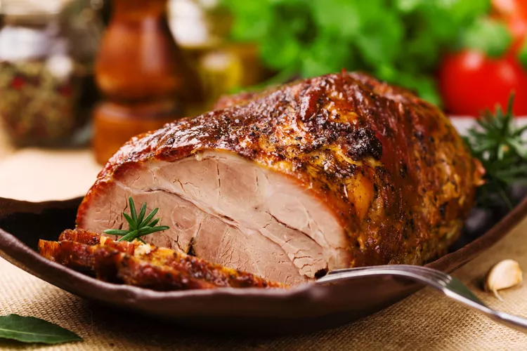
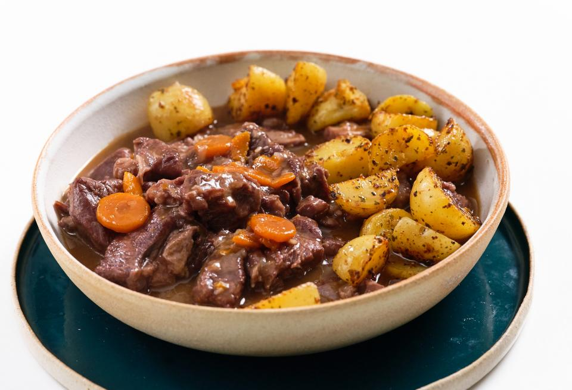

ingredientes
- 4 muslos de pollo grandes
- 300 ml de salsa de tomate(casera)
- 1 cebolla grande
- 2 dientes de ajo
- Sal
- Pimienta
- Aceite de oliva
- 1 Guindila (opcional)
- 1/2 vaso de vino blanco o de caldo de pollo
- Hierbas aromáticas al gusto: orégano, laurel, albahaca, tomillo, romero
Paso a paso
- Empezaremos sazonando los muslos de pollo con sal y pimienta al gusto.
- Calentamos una cacerola baja con un chorrito de aceite de oliva y doramos los muslos de pollo durante 8 minutos a fuego medio, dándoles la vuelta de vez en cuando.
- Aprovechamos este tiempo para pelar los ajos y la cebolla. Los picamos muy finamente.
- Pasados los 8 minutos, retiramos los muslos y, en la misma sartén o cacerola baja, sofreímos la cebolla, la guindilla (si queremos darle un punto picante) y los ajos durante 5 minutos.
- Añadimos la salsa de tomate y el caldo de pollo o vino blanco. Agregamos también las hierbas aromáticas escogidas, en esta ocasión nosotros hemos usado laurel y tomillo fresco.
- Tapamos y cocinamos a fuego medio durante 10 minutos, dándole la vuelta de vez en cuando. En este momento, destapamos y dejamos cocinar otros 10 minutos, así la la salsa de tomate se reducirá y todo el sabor se concentrará e impregnará el pollo.
- Disfrutar tras servir
Otros platillos de pollo
En el verano, vamos a utilizar el pollo para preparar desde un clásico como la ensalada cesar hasta un salpicón de ave o un tremendo sandwich de pollo con mostaza. Ah se me hace agua la boca! El pollo además tiene mucho jugo por lo que puede ser un gran ingrediente para recetas con pollo para una dieta liviana y no como otros platos de invierno que también llevan pollo pero te dejan para dormir la siesta. Se me ocurre pollo a la provenzal o a la sal, que también puede ser acompañado por una ensalada. O una simple pechuga a la plancha con algunos condimentos
Y esto no termina acá: las recetas con pollo para el invierno van como loc@! Me vas a decir que no le pones pollo a un guiso Marta? Lo que te perdes! Osea esto es muy fácil, podría nombrar recetas sin parar. La receta de arroz con pollo es un clásico que se come todo el año pero demás no te olvides que acá tengo una receta de pollo a la crema en 5 minutos que no lo podes creer. También me gusta mucho el pollo al horno con papas, otro clásico que no podemos dejar pasar. Creo que no debería escribir más esta introducción. Basta decirte lo siguiente: si estás buscando recetas de pollo estás en el lugar indicado porque aquí vas a encontrarlas todas.
Recetas de carne roja

Milanesa napolitana
Si bien la milanesa a la napolitana lleva salsa de tomate, queso y jamón, se le pueden agregar rodajas de tomate para una presentación más fresca y rodajas de limón para condimentar.

Asado al horno
una comida de preparación simple pero de la comidas mas ricas del mundo
Albondigas con salsa de tomate
Un plato sencillo pero súper rico, ideal para mojar el pancito en la salsa y cerrar los ojos mientras lo disfrutamos.
Otras comidas
pescado a la parrilla
Las noches de verano son perfectas para reuniones familiares o de amigos en torno a las brasas de la barbacoa. Por eso os queremos dar una alternativa a las deliciosas recetas de carne a la brasa como el churrasco brasileño, con esta estupenda dorada asada en las brasas de la parrilla, que podéis preparar este mismo fin de semana.
Pollo al horno

Es un clásico de los asadores y de las comidas de domingo y un auténtico referente de la confort food. El pollo al horno o pollo asado es una receta infalible para la que no hacen falta demasiados trucos y sí un poco de cariño en la preparación.
Pollo en salsa
.jpeg)
Pocos amigos mejores que el pan puede tener una receta de pollo en salsa. Las opciones son tan infinitas como las salsas que quieras plantear: cerveza, vino, verduras, nata, champiñones… Preparaciones baratas y rápidas que, además, nos permiten dar un poco más de hidratación al pollo y que nos quede bien jugoso.
Lomo de cerdo al horno
Suculento y fragante, este lomo de cerdo se sazona con ajo, romero y vino blanco. si quieres variar en carnes a cocinar este es tu platillo ideal
Estofado de ternera
Un guiso de los de siempre, hecho a fuego lento, sin prisa, que es como queda mejor. Es un plato muy socorrido para una comida con muchos comensales, se tarda lo mismo en hacerla para 4 que para 12. Un buen vino tinto le dará el toque a la salsa; y las horas de cocción harán que la carne se deshaga. Con arroz, patatas o pasta, es un plato fantástico.